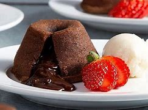

PETIT GATEAU

Ingredientes:
Modo de Preparo:
- Derreta em banho-maria 200 gramas de chocolate meio amargo e 2 colheres de sopa sem sal. Reserve.
- Na bateira, coloque 2 ovos, 2 gemas, meia xícara de chá de açúcar. Bata até obter um creme claro.
- Em seguida, adicione a mistura de chocolate, 2 colheres de sopa de farinha de trigo e misture.
- Transfira a mistura para forminhas untadas com manteiga e enfarinhadas.
- Leve para assar em forno preaquecido a 200 graus Celsius de 6 a 10 minutos.
- Desenforme ainda quente e sirva com sorvete de creme.